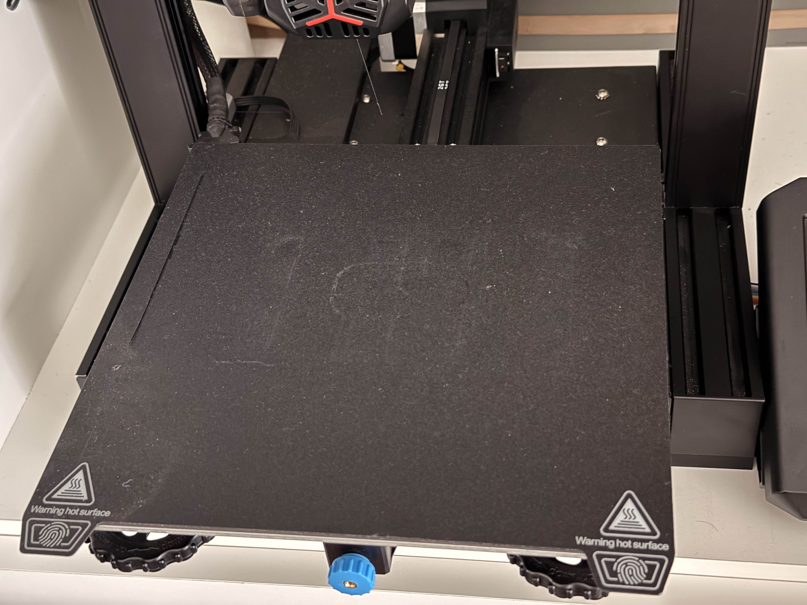

Custom-Built & Modified 3D Printer
Mechanical, thermal, and process optimizations to improve print quality, reliability, and development speed
Overview & Motivation
3D printers are powerful tools because they allow anyone to create unique, custom parts on demand. However, they also come with major limitations: long print times, inconsistent quality, and reliability issues when trying to iterate quickly.
I modified my printer to directly address these issues, focusing on reducing warping, improving surface quality, shortening iteration time, and increasing overall reliability during long prints.

Solving Print Warping
One of the biggest issues I encountered was warping at the bottom of prints. This is caused by thermal stress from the heated build plate, which is needed for adhesion but can distort parts as they cool.
I evaluated two approaches:
- Using supports (which increased print time and material usage)
- Reducing build plate temperature while improving surface adhesion
I chose the second approach to maintain fast iteration speeds without sacrificing part quality.
Build Plate Upgrade
I replaced the original glass build plate with a fiberglass plate. The rougher surface allows filament to mechanically grip into microscopic crevices, dramatically improving adhesion at lower temperatures.
This change eliminated the need for glue, reduced warping, and made part removal easier by allowing the plate to flex instead of prying prints off a rigid glass surface.
Interchangeable Nozzle System
The nozzle plays a critical role in print quality and speed. Smaller nozzles produce finer detail but dramatically increase print time, while larger nozzles allow faster prints at the cost of resolution.
I modified the printer to support interchangeable nozzles, allowing me to choose the optimal nozzle size depending on the application:
- Thin nozzles for high-precision parts
- Larger nozzles for rapid prototyping and structural components
Thermal Calibration & Material Testing
I performed extensive testing with nozzle temperature to balance print quality, strength, and reliability.
Through experimentation, I found 210 °C to be the optimal printing temperature:
- Lower temperatures caused under-extrusion and weak layer bonding
- Higher temperatures caused stringing and overly glossy surfaces
This tuning significantly improved surface finish and reduced failed prints.
Reliability & Print Monitoring
To improve reliability during long prints, I implemented a system that allows me to monitor prints remotely from my computer.
I also configured automatic power-loss recovery, allowing the printer to pause a build if power is lost and resume from the exact point where it stopped once power is restored. This prevented multi-day prints from being lost due to brief outages.
Results
- Significantly reduced warping without supports
- Improved surface finish and dimensional accuracy
- Faster iteration through nozzle and thermal optimization
- Higher success rate on long prints
What I’d Improve Next
- Enclosed thermal chamber for advanced materials
- Automated bed leveling with sensor feedback
- Material-specific print profiles
- Real-time failure detection using computer vision